हाइब्रिड आर्किटेक्चर: सुपरबेस और स्प्रिंग बूट के साथ दो दुनियाओं का सर्वश्रेष्ठ
प्रकाशित: 14 January 2026
सुपाबेस की सरलता और स्प्रिंग बूट की शक्ति के बीच चयन करने के बजाय, क्यों न दोनों को मिलाएं? प्रत्येक तकनीक के सर्वोत्तम पहलुओं का उपयोग करने वाली एक हाइब्रिड आर्किटेक्चर की खोज करें।
- टिक
-
[]
- आधुनिक वास्तुकला का झूठा द्वंद्व
- आर्किटेक्चरल विज़न
- डिज़ाइन सिद्धांत
- प्रवाहों का आर्केस्ट्रेशन
- निर्णय मैट्रिक्स
- परियोजना प्रकार के अनुसार वास्तुशिल्प के उदाहरण
- प्रगतिशील प्रवासन रणनीति
- लागत और परिचालन विचार
- निष्कर्ष : आदर्श संतुलन
- और avanti
- विकास की संभावनाएँ
- वास्तुसिल्प साक्ष्य
- संश्लेषण : एक आधुनिक वास्तुशिल्पीय पारडिग्म
- अंतिम निष्कर्ष
आधुनिक वास्तुकला का झूठा द्वंद्व
जब हम एक आधुनिक एप्लिकेशन बनाते हैं जिसमें एक स्थिर फ्रंटएंड होता है, तो हमें अक्सर एक द्विआधारी विकल्प का सामना करना पड़ता है :
-
बैकएंड-एज़-ए-सेवा समाधान पर सब कुछ दाँव पर लगाएँ(Supabase, Firebase) - सरल लेकिन सीमित
-
एक पूर्ण बैकएंड बनाएँ(Spring Boot, Node.js) - शक्तिशाली लेकिन जटिल
यह विकल्प एक झूठा द्वंद्व है। हाइब्रिड वास्तुकला एक तीसरा रास्ता प्रस्तावित करती है: हर तकनीक का उपयोग वहाँ करें जहाँ वह उत्कृष्ट है।
आर्किटेक्चरल विज़न
पारंपरिक वास्तुशास्त्र : एकात्मक
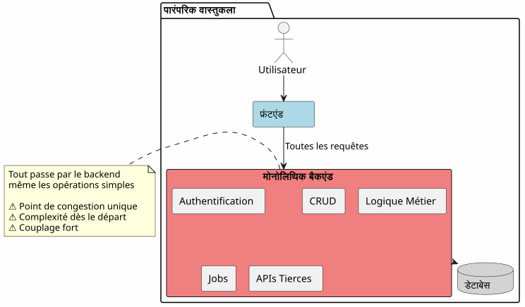
इस दृष्टिकोण में, सबसे सरल संचालन (एक लेख पढ़ना, एक टिप्पणी बनाना) भी आपके बैकएंड से गुजरना चाहिए। आप पहले दिन से ही जटिलता की लागत चुकाते हैं।
BaaS वास्तुकला: हर प्रतिनिधि
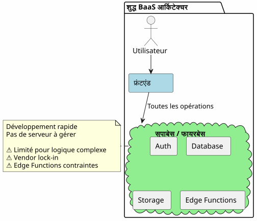
विपरीत, किसी BaaS को सब कुछ सौंपना शुरू में आकर्षक लगता है लेकिन यह तेजी से अपनी सीमाएँ दिखाता है जैसे ही व्यावसायिक तर्क जटिल हो जाता है।
हाइब्रिड आर्किटेक्चर : जिम्मेदारियों का विभाजन
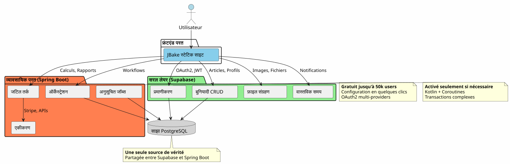
हाइब्रिड आर्किटेक्चर जटिलता और संचालन की प्रकृति के अनुसार जिम्मेदारियों को स्पष्ट रूप से अलग करता है।
डिज़ाइन सिद्धांत
सिद्धांत 1: सरलता से शुरू करें, बुद्धिमानी से विकसित हों
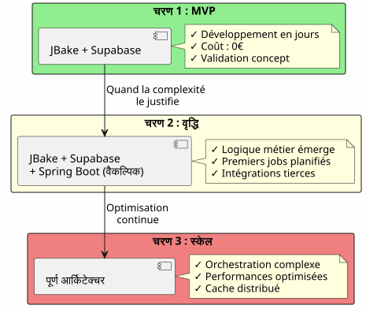
यदि आपको इसकी आवश्यकता नहीं है, तो Spring Boot को न बनाएँ।Supabase के साथ शुरू करें, जब जटिलता आवश्यक हो, Spring Boot जोड़ें।
सिद्धांत 2: संचालन की प्रकृति के अनुसार पृथक्करण

सिद्धांत 3 : एकमात्र सत्य का स्रोत
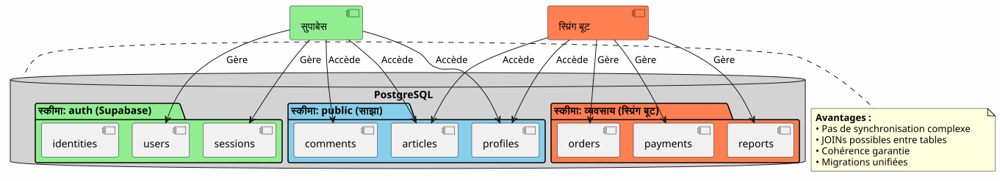
समान PostgreSQL इंस्टेंस साझा करके, Supabase और Spring Boot एक ही डेटा पर काम करते हैं, कोई जटिल समन्वय की आवश्यकता नहीं।
प्रवाहों का आर्केस्ट्रेशन
फ़्लक्स 1 : केंद्रीकृत प्रमाणीकरण
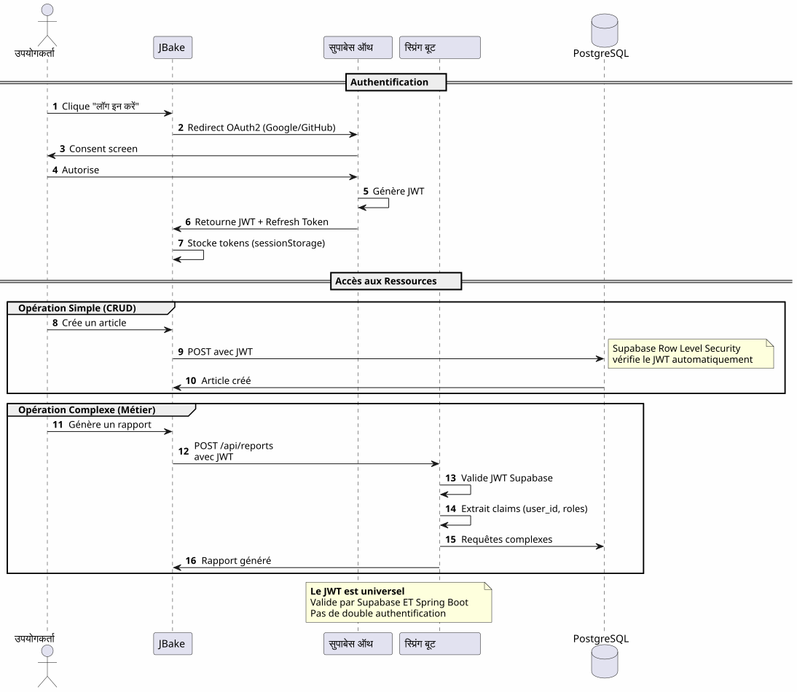
मुख्य बिंदुएक ही प्रमाणन प्रक्रिया, एक ही JWT, हर जगह उपयोग करने योग्य।
प्रवाह 2: ऑर्केस्ट्रेशन का एक जटिल व्यावसायिक प्रक्रिया
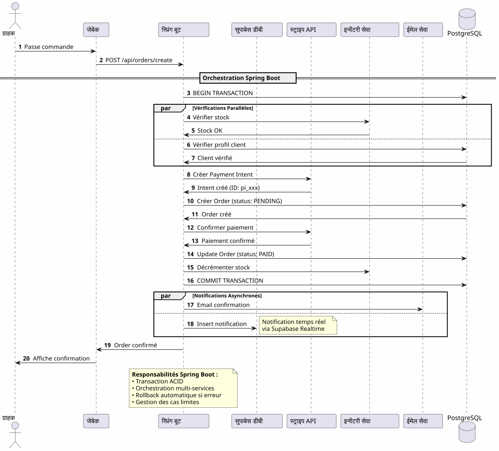
स्प्रिंग बूट क्या लाता हैविश्वसनीय ऑर्केस्ट्रेशन जटिल प्रक्रियाओं का जिसमें कई प्रणालियाँ शामिल होती हैं और लेन‑देन की गारंटी होती है।
फ़्लक्स 3: निर्धारित कार्य और सिंक्रोनाइज़ेशन
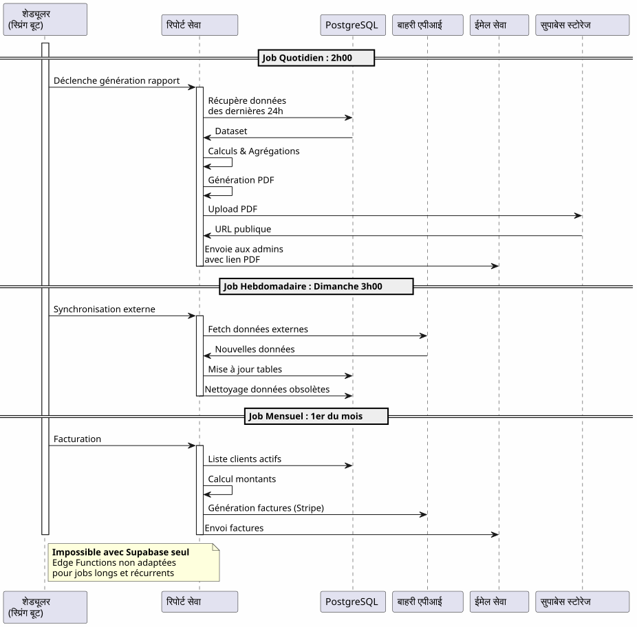
स्प्रिंग बूट क्या लाता हैविश्वसनीय शेड्यूल किए गए कार्य, राज्य प्रबंधन, स्वचालित पुनः प्रयास और गारंटीकृत निष्पादन।
निर्णय मैट्रिक्स
Supabase का उपयोग कब करें?

स्प्रिंग बूट का उपयोग कब करें?

परियोजना प्रकार के अनुसार वास्तुशिल्प के उदाहरण
ब्लॉग / पोर्टफोलियो
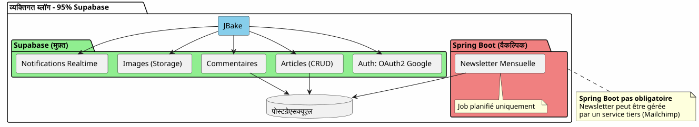
निर्णय: 100% Supabase बहुत पर्याप्त है.
SaaS एप्लिकेशन
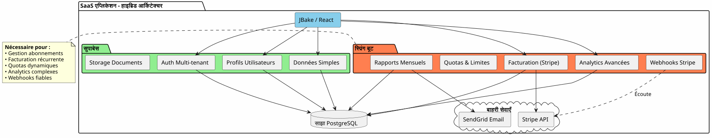
निर्णयआवश्यक हाइब्रिड आर्किटेक्चर। Supabase आवश्यक चीज़ों के लिए, Spring Boot महत्वपूर्ण हिस्से (भुगतान, बिलिंग) के लिए।
ई-कॉमर्स
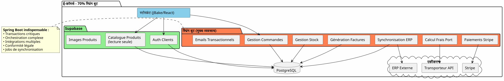
निर्णयSpring Boot अनिवार्य है। Supabase केवल प्रमाणीकरण और कैटलॉग के लिए।
प्रगतिशील प्रवासन रणनीति

लागत और परिचालन विचार
लागत संरचना
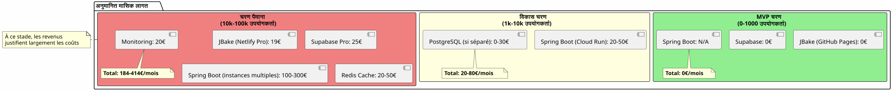
परिचालन की जिम्मेदारियाँ
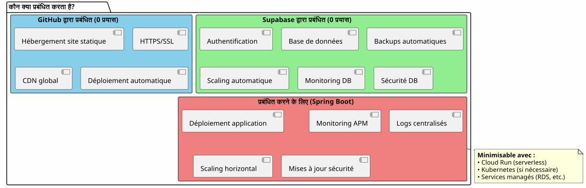
निष्कर्ष : आदर्श संतुलन
सुपाबेस + स्प्रिंग बूट का हाइब्रिड आर्किटेक्चर एक समझौता नहीं है, यह एकसिनर्जी.
स्मरणीय सिद्धांत

इस आर्किटेक्चर को कब चुनें?
✅ यह आर्किटेक्चर तब आदर्श है जब :
-
आप जल्दी शुरू करना चाहते हैं (MVP दिनों में, महीनों में नहीं)
-
आप व्यावसायिक जटिलता में वृद्धि की अपेक्षा करते हैं
-
आप प्रारंभिक लागत को कम करना चाहते हैं
-
आप PostgreSQL पसंद करते हैं और एक सच्चाई का एकल स्रोत चाहते हैं
-
आपको Kotlin और Coroutines व्यापार कोड के लिए पसंद है
-
आप पूर्ण विक्रेता बंधन से बचना चाहते हैं
❌ यह आर्किटेक्चर PAS अनुकूल नहीं है यदि :
-
आपका प्रोजेक्ट सरल है और यह ऐसा ही बना रहेगा (व्यक्तिगत ब्लॉग → 100% सुपरबेस पर्याप्त है)
-
आपके पास पहले से ही एक स्थापित बैकएंड स्टैक है जिसे आप जानते हैं
-
आप पारंपरिक मोनोलिथ पसंद करते हैं
-
आपको .NET, Python, या कोई भी बैकएंड भाषा की ज़रूरत है
अंतिम समग्र दृष्टि
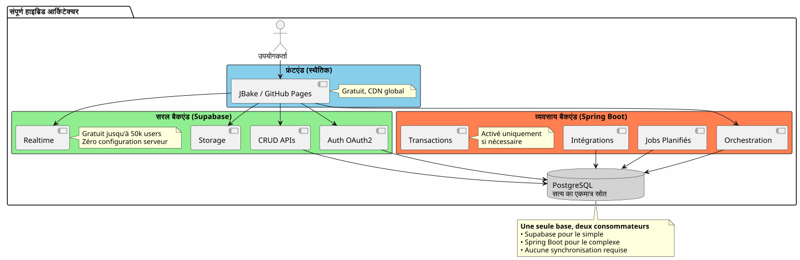
दोनों दुनियाओं का सबसे अच्छा
यह आर्किटेक्चर आपको देता है :
🚀 सुपाबेस की गति
-
स्टार्ट घंटों में, सप्ताहों में नहीं
-
ओएथ2 के कुछ ही क्लिक में प्रमाणीकरण
-
स्वचालित रूप से उत्पन्न REST API
-
शून्य सर्वर कॉन्फ़िगरेशन
💪 Spring Boot की शक्ति
-
Kotlin और Coroutines के लिए असिंक्रोनस सुंदर कोड
-
जटिल व्यावसायिक प्रक्रियाओं की ऑर्केस्ट्रेशन
-
विश्वसनीय नियोजित कार्य
-
गारंटीकृत ACID लेनदेन
-
Spring का पूर्ण इकोसिस्टम
💰 प्रगतिशील अर्थव्यवस्था
-
0€ शुरू करने और सत्यापित करने के लिए
-
वृद्धि के साथ बढ़ने वाली लागत
-
पूर्व समय पर ओवर इंजीनियरिंग नहीं
🎯 आर्किटेक्टिक लचीलापन
-
क्रमिक माइग्रेशन बिना पुनः डिज़ाइन
-
Spring Boot को केवल आवश्यकता पड़ने पर जोड़ें
-
कुल विक्रेता लॉक-इन नहीं
-
विकासशील वास्तुकला
और avanti
तकनीकी संसाधन
Supabase दस्तावेज़ :
स्प्रिंग बूट दस्तावेज़:
अतिरिक्त लेख :
-
JWT के साथ APIs को सुरक्षित बनाना
-
PostgreSQL के प्रदर्शन का अनुकूलन
-
प्रगतिशील प्रवासन पैटर्न
-
वितरित आर्किटेक्चर में त्रुटि प्रबंधन
वास्तविक उपयोग के मामले
यह हाइब्रिड आर्किटेक्चर सफलतापूर्वक उपयोग में लाया जाता है :
-
सॉफ़्टवेयर एज़ ए सर्विस बिज़नेस-टू-बिज़नेस: प्रमाणीकरण Supabase, बिलिंग Spring Boot
-
बाज़ारें: कैटलॉग Supabase, transactions Spring Boot
-
सामग्री प्लेटफ़ॉर्म: लेख Supabase, analytics Spring Boot
-
आंतरिक उपकरण: CRUD Supabase, कार्यप्रवाह Spring Boot
स्टार्टअप चेकलिस्ट
फेज़ 1 - आधार (सप्ताह 1)
-
Supabase खाता बनाएँ - [ ] प्रोजेक्ट PostgreSQL को कॉन्फ़िगर करें - [ ] प्रमाणीकरण सक्षम करें (Google, GitHub) - [ ] प्रारंभिक योजना को परिभाषित करें - [ ] Row Level Security कॉन्फ़िगर करें - [ ] JBake से API का परीक्षण करें
चरण 2 - MVP (सप्ताह 2-3)
-
मुख्य पृष्ठों को लागू करें - [ ] OAuth2 प्रमाणीकृति एकीकृत करें - [ ] CRUD फॉर्म बनाएं - [ ] फ़ाइलों के लिए Storage को कॉन्फ़िगर करें - [ ] GitHub Pages पर डिप्लॉय करना - [ ] वास्तविक स्थितियों में परीक्षण करें
Phase 3 - विकास (आवश्यकतानुसार)
-
जटिल तर्क की आवश्यकताओं की पहचान करें - [ ] यदि आवश्यक हो तो Spring Boot प्रोजेक्ट बनाएँ - [ ] Supabase JWT सत्यापन कॉन्फ़िगर करें - [ ] PostgreSQL Supabase से कनेक्ट करें - [ ] जटिल फ़ीचर्स को माइग्रेट करें - [ ] योजित कार्यों को लागू करें - [ ] स्प्रिंग बूट को तैनात करें (Cloud Run आदि के साथ)
से बचने के लिए एंटी‑पैटर्न
❌ मत करें:
-
सुपाबेस और स्प्रिंग बूट के बीच डेटा को दोहराएँ
-
दो अलग PostgreSQL डेटाबेस बनाएँ
-
आप स्वयं प्रमाणीकरण को कोड करें
-
Spring Boot का उपयोग सरल CRUD के लिए करें
-
शुरू से ही अत्यधिक वास्तुशास्त्र करना
-
Supabase के Row Level Security को अनदेखा करें
✅ अधिकतर करना :
-
एक ही PostgreSQL डेटाबेस साझा करना
-
Supabase को प्रमाणीकरण प्रबंधित करने दें
-
जटिलता के लिए केवल Spring Boot का उपयोग करें
-
सरल शुरू करें, धीरे-धीरे विकसित हों
-
प्रत्येक तकनीक की ताकतों का उपयोग करें
-
डेटाबेस स्तर पर RLS के साथ सुरक्षित करें
विकास की संभावनाएँ
नई क्षमताओं का जोड़
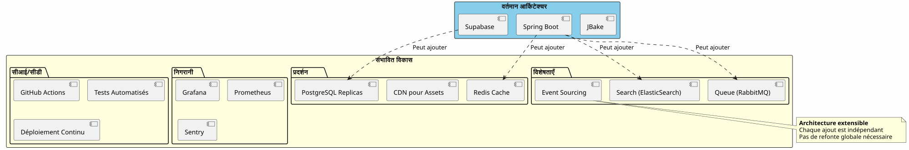
स्केलिंग क्षैतिज
जब आपका एप्लिकेशन बढ़ता है, हाइब्रिड आर्किटेक्चर प्राकृतिक रूप से स्केल होता है:
Supabase :
-
स्वचालित रूप से मिलियनों ऑपरेशन तक स्केल
-
पढ़ने के प्रदर्शन के लिए प्रतिकृतियाँ
-
सुरक्षा के लिए समय-निर्दिष्ट बिंदु पुनर्प्राप्ति
स्प्रिंग बूट :
-
लोड बैलेंसर के पीछे कई इंस्टेंस
-
स्टेटलेस डिज़ाइन क्षैतिज स्केलींग को आसान बनाता है
-
Kubernetes के लिए ऑर्केस्ट्रेशन यदि आवश्यक हो
पोस्टग्रेसक्यूएल :
-
बड़े टेबल के लिए पार्टिशनिंग
-
कनेक्शन पूलिंग (PgBouncer)
-
शर्डिंग वास्तव में आवश्यक है (दुर्लभ)
वास्तुसिल्प साक्ष्य
Startup SaaS (50 हज़ार उपयोगकर्ता)
_ हमने 100% Supabase के साथ शुरुआत की। 5k उपयोगकर्ताओं पर, हमने केवल Stripe बिलिंग और मासिक रिपोर्ट के लिए Spring Boot जोड़ा। एक साल बाद, हमारे 80% संचालन अभी भी Supabase के माध्यम से चलते हैं। Spring Boot केवल महत्वपूर्ण भाग को संभालता है। इस अलगाव ने हमें बिना redesign के स्केल करने की अनुमति दी। _
ई-लर्निंग प्लेटफ़ॉर्म (10k उपयोगकर्ता)
_ Supabase के OAuth2 प्रमाणीकरण ने हमें 3 सप्ताह विकास में बचाया। स्वचालित रूप से बनाई गई API हमारे पूरे पाठ्यक्रम कैटलॉग को संभालती हैं। Spring Boot केवल PDF प्रमाणपत्रों और प्रगति ईमेल के लिए उपयोग किया जाता है। सरल, बनाए रखने योग्य, विस्तारित करने योग्य आर्किटेक्चर। _
B2B मार्केटप्लेस (3k उपयोगकर्ता)
_ Spring Boot खरीदारों और विक्रेताओं के बीच लेन‑देन को प्रबंधित करता है (महत्वपूर्ण)। Supabase बाकी सब कुछ प्रबंधित करता है: प्रोफ़ाइल, वास्तविक समय की संदेशवाही, दस्तावेज़। इस बात से कि वे एक ही PostgreSQL डेटाबेस साझा करते हैं, हमें जटिल समन्वय से बचाता है। हमारा अब तक का सर्वश्रेष्ठ आर्किटेक्चरल निर्णय। _
संश्लेषण : एक आधुनिक वास्तुशिल्पीय पारडिग्म
Supabase + Spring Boot का हाइब्रिड आर्किटेक्चर एक नया प्रतिमान है:आर्किटेक्चरल विशेषीकरण.
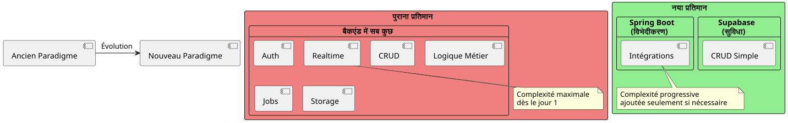
मूल सिद्धांत :पहले से ही सेवा के रूप में मौजूद चीज़ का निर्माण न करें। अपने एप्लिकेशन को अलग करने वाली चीज़ पर ध्यान केंद्रित करें।
80/20 नियम
अधिकांश अनुप्रयोगों में:
-
80% संचालनहैं के CRUD मानक → Supabase
-
संचालन का 20%व्यवसायिक तर्क की आवश्यकता होती है → Spring Boot
यह प्राकृतिक नियम हाइब्रिड आर्किटेक्चर को सही ठहराता है।
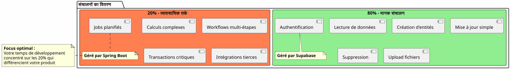
अंतिम निष्कर्ष
हाइब्रिड आर्किटेक्चर एक तकनीकी समझौता नहीं है, यह एकरणनीतिक निर्णय.
यह आपको करने की अनुमति देता है:
-
✅ शीघ्रता से कार्यात्मक MVP के साथ प्रारंभ करें
-
✅ अपने बाजार को मान्य करें, भारी निवेश के बिना
-
✅ जब जटिलता इसकी मांग करती है तब धीरे-धीरे विकसित होना
-
✅ अपनी लागत को प्रत्येक चरण में नियंत्रित रखें
-
✅ प्रौद्योगिकी का सर्वोत्तम उपयोग करें
-
✅ जल्दबाजी में ओवर-इंजीनियरिंग से बचें
-
✅ भविष्य के लिए लचीलापन संरक्षित रखें
वह प्रतिनिधित्व करती है :
-
🎯व्यावहारिकता: हर तकनीक जहाँ यह उत्कृष्ट है
-
🚀वेग: बाज़ार में आने का समय न्यूनतम
-
💰अर्थव्यवस्थालागत मूल्य के अनुसार संरेखित
-
🔮स्केलेबिलिटी: आपके साथ बढ़ती वास्तुकला
-
🛡️मजबूतीअनुभवी और विश्वसनीय सेवाएँ
आपका अगला कदम
यदि यह वास्तुकला आपके दिल से बोलती है, तो यहाँ से शुरू करें :
-
एक Supabase खाता बनाएँ(मुफ्त)
-
अपना न्यूनतम डेटा स्कीमा परिभाषित करें
-
OAuth2 प्रमाणीकरण कॉन्फ़िगर करें
-
अपनी पहली JBake पृष्ठ बनाएँ जो API का उपयोग करती है
-
GitHub Pages पर तैनात करें
आपके पास एक कार्यात्मक MVP होगाकुछ दिन.
Spring Boot आपकी आवश्यकता के अनुसार स्वाभाविक रूप से आएगा। पहले नहीं।
हाइब्रिड आर्किटेक्चर वह कला है जो ठीक वही बनाती है जो ज़रूरत होती है, जब ज़रूरत होती है।
शुभ विकास! 🚀
यदि आप सोचते हैं कि यह लेख अन्य डेवलपर्स को सही वास्तुकला विकल्प बनाने में मदद कर सकता है, तो इस लेख को शेयर करें।